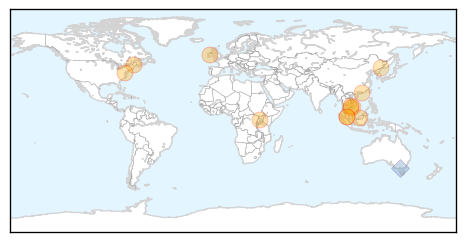

30 Day Trends
Web: 0 alerts, 0 warnings
Twitter: 2 alerts, 0 warnings
Top Articles:
- 0.987
- Vietnam halts poultry imports from China
- 0.984
- Spike in flu cases sees 26 hospitalised in past week
- 0.977
- Flu Activity Now Widespread in Maine
- 0.971
- Bird flu kills two siblings in northeastern Cambodia
- 0.962
- Daily Express Newspaper Online, Sabah, Malaysia.
- 0.956
- 27 countries pre-empt dangerous diseases
- 0.928
- WHO warns of alarming surge in deadly bird flu
- 0.914
- Another Death Due To Bird Flu In China
- 0.903
- Threat of global disease outbreaks spawns 27-nation pact
- 0.884
- Sabah beefs up screening on foreigners for bird flu - Nation
- 0.850
- Tourists screened at KK airport following first case of avian flu - Nation
- 0.742
- PM urges action against avian flu
Top Tweets:
- 0.867
- Flu Fact Friday: Every year nearly 1500 Australian children are admitted to hospital with confirmed cases of influenza.
Web/News Articles

Tweets

Article Locations
Article Confidences